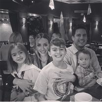

<!doctype html>
<html lang="en">

</html>

<head>
  <title>Chris Goslin</title>
  <link rel="canonical" href="https://getbootstrap.com/docs/4.1/examples/sticky-footer-navbar/">

  <!-- Bootstrap core CSS -->
  <link href="../../dist/css/bootstrap.min.css" rel="stylesheet">

  <!-- Custom styles for this template -->
  <link href="sticky-footer-navbar.css" rel="stylesheet">
  <link rel="stylesheet" href="assets/css/style.css" />
</head>

<!--waiting for log design-->
<body background="Assets/images/brick-wall.jpg">

  <header>
    <nav class="navbar">
      </img>
      <h1>Chris Goslin</h1>
      <section class="nav-btn">
        <ol class="nav-item active">
          <a class="nav-link" href="index.html">Home</a>
        </ol>
        <ol class="nav-item active">
          <a class="nav-link" href="contact.html">Contact</a>
        </ol>
        <ol class="nav-item active">
          <a class="nav-link" href="portfolio.html">Portfolio Pages</a>
        </ol>
      </section>
    </nav>
  </header>


<!--learned how to save images into your repo to view anything you can create!!-->
<!--will have more about me as class goes on, wanted more resume content-->

  <section class="card-body">
    <h2 class="card-title">Chris Goslin</h2>
    
    <p class="card-text">My name is Chris Goslin, welcome to my Gallery. I would like to thank you for taking the time
      to look at my work. A little about myself, I am from San Antonio, Texas. I am married and have 3 kids.I am
      currently attending UTSA coding school, to advance my career, with knowledge of HTML, CSS, and Bootstrap. I have a
      lot more to learn, but feel great about the start and would love to show my work.</section>


  <footer class="footer">
    <aside class="container">
      <span class="text-muted">Thanks for stopping by</span>
    </aside>
  </footer>


  <script src="https://code.jquery.com/jquery-3.3.1.slim.min.js"
    integrity="sha384-q8i/X+965DzO0rT7abK41JStQIAqVgRVzpbzo5smXKp4YfRvH+8abtTE1Pi6jizo"
    crossorigin="anonymous"></script>
  <script>window.jQuery || document.write('<script src="../../assets/js/vendor/jquery-slim.min.js"><\/script>')</script>
  <script src="../../assets/js/vendor/popper.min.js"></script>
  <script src="../../dist/js/bootstrap.min.js"></script>
</body>

</html>